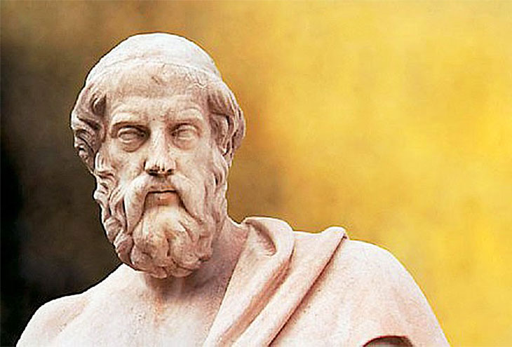
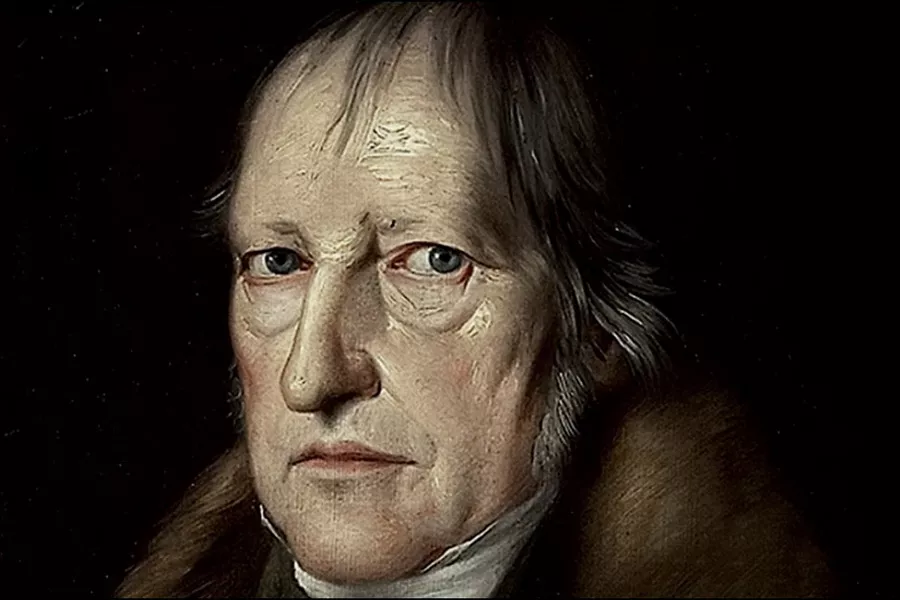

Философия — это древнейшее и одновременно современное знание, которое стремится понять самые фундаментальные вопросы: что такое реальность, как мы можем познавать мир, как устроена человеческая жизнь и общество. В отличие от конкретных наук, философия задаёт рамки мышления, вырабатывает методы анализа и помогает осмыслить смысл существования и процесс познания. Она играет роль своеобразного «зеркала», в котором отражается не только объективная реальность, но и способы нашего понимания этой реальности.
История философии насчитывает тысячелетия и развивалась в тесной связи с историческими, культурными и социальными изменениями. В античности, благодаря таким мыслителям, как Сократ, Платон и Аристотель, были заложены основы логики, этики и метафизики. Эти идеи оказали влияние на дальнейшее развитие европейской мысли, плавно переходя в эпоху Средневековья, где философия служила слугой теологии, пытаясь объединить веру и разум. Возрождение и Новое время принесли новые подходы к познанию, ставя на первое место опыт и разум, что выразилось в трудах Декарта, Локка и других.
Просвещение XVIII века, со своими идеалами разума и критики традиций, положило начало тому философскому климату, в котором зародилась немецкая классическая философия. Она стала кульминацией многовекового процесса, синтезируя рационализм и эмпиризм, и придавала особое значение развитию духа, сознания и общества.
Начало этой традиции связывают с Иммануилом Кантом, который изменил понимание познания, поставив акцент на структуру сознания и познавательных способностях человека. Кант показал, что мы не можем выйти за пределы наших чувственных восприятий и категорий разума, и что объективный мир — это то, что мы видим сквозь призму нашего мышления. Его философия была попыткой соединить опыт и разум, выявить условия возможности знания и морали. Кант поставил под сомнение классическую метафизику и предложил критический метод, который определил дальнейшее направление философии.
Иоганн Готлиб Фихте, один из учеников Канта, пошёл дальше в развитии субъективного идеализма. Он утверждал, что не внешний мир, а именно «Я» — активный субъект — является началом всего бытия и познания. Сознание человека не просто отражает реальность, а творит её, что подчеркивало роль свободы и самосознания в философии. Для Фихте нравственные и политические вопросы были тесно связаны с осознанием себя как свободного субъекта, способного менять мир.
Вместе с тем в этот же период Фридрих Шиллер, более известный как поэт и драматург, внёс важный вклад в философию через идею искусства и эстетики. Он видел в искусстве высшее проявление свободы и средство воспитания духовной и моральной личности. Для Шиллера развитие человека было связано с гармонией между внутренним миром и внешними обстоятельствами, а через эстетику — с пробуждением свободы и самосознания.
Кульминацией немецкой классической философии стал Георг Вильгельм Фридрих Гегель, который создал масштабную систему, объясняющую развитие всего мира, природы, общества и сознания как процесс диалектического развития. Для Гегеля мир не статичен, а постоянно меняется через столкновение противоположностей и их разрешение. История для него — это движение духа к полной свободе и самопознанию. Его философия стала теоретической основой для многих последующих идей, включая и марксизм, хотя Маркс и Энгельс критиковали гегелевский идеализм.
Людвиг Фейербах, в свою очередь, выступил критиком идеализма, вернувшись к материалистическому пониманию мира. Он считал, что реальность первична, а сознание — лишь её отражение. Его критика религии и идеалистической философии повлияла на формирование материалистического взгляда Маркса и Энгельса, которые взяли диалектику Гегеля и соединили её с материализмом, создав тем самым диалектический материализм.
Диалектический материализм, который стал философской основой марксизма, вырос именно из наследия немецкой классической философии, особенно из диалектики Гегеля и материалистической критики Фейербаха. Маркс и Энгельс приняли диалектический метод как способ познания и объяснения движения и развития природы, общества и мышления, но отвергли идеалистический взгляд на первичность духа, сделав материю объективной реальностью, существующей независимо от сознания.
Суть диалектического материализма в том, что мир существует объективно и развивается по законам диалектики — через единство и борьбу противоположностей, переход количественных изменений в качественные и отрицание отрицания. Этот метод позволяет понять, что любые явления находятся во взаимосвязи, меняются и переходят друг в друга в непрерывном процессе развития.
Диалектический материализм утверждает, что материя первична, и сознание возникает как отражение материального мира. Познание — процесс активного отражения, в ходе которого человек всё глубже постигает объективные законы природы и общества. В отличие от механистического материализма, диалектический материализм видит мир не как статичную совокупность вещей, а как динамично развивающуюся систему, где всё взаимосвязано.
История, с этой точки зрения, является движением производительных сил и классовой борьбы, что приводит к изменению общественных формаций и в конечном итоге к построению коммунистического общества без эксплуатации и классов. Диалектический материализм — это не просто философия, а научный метод исследования общества и природы, который Маркс и Энгельс использовали для анализа капитализма и предсказания его развития.
Таким образом, немецкая классическая философия, с её акцентом на развитие духа и диалектику, стала фундаментом, на котором Маркс и Энгельс построили материалистическую систему, способную объяснить не только развитие сознания, но и объективных социальных и экономических процессов. Диалектический материализм продолжает оставаться одной из ключевых философских концепций для понимания природы общества и истории.